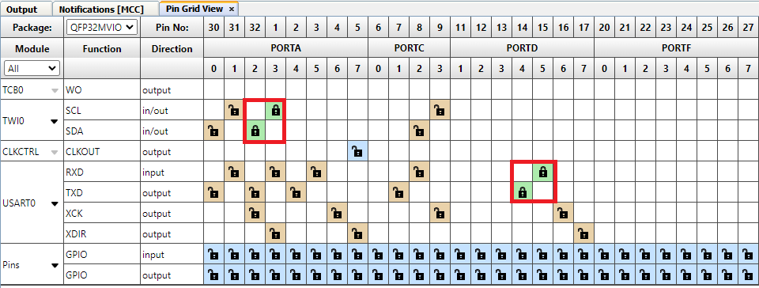
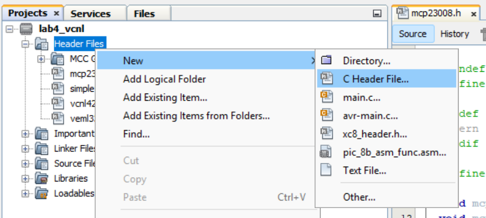
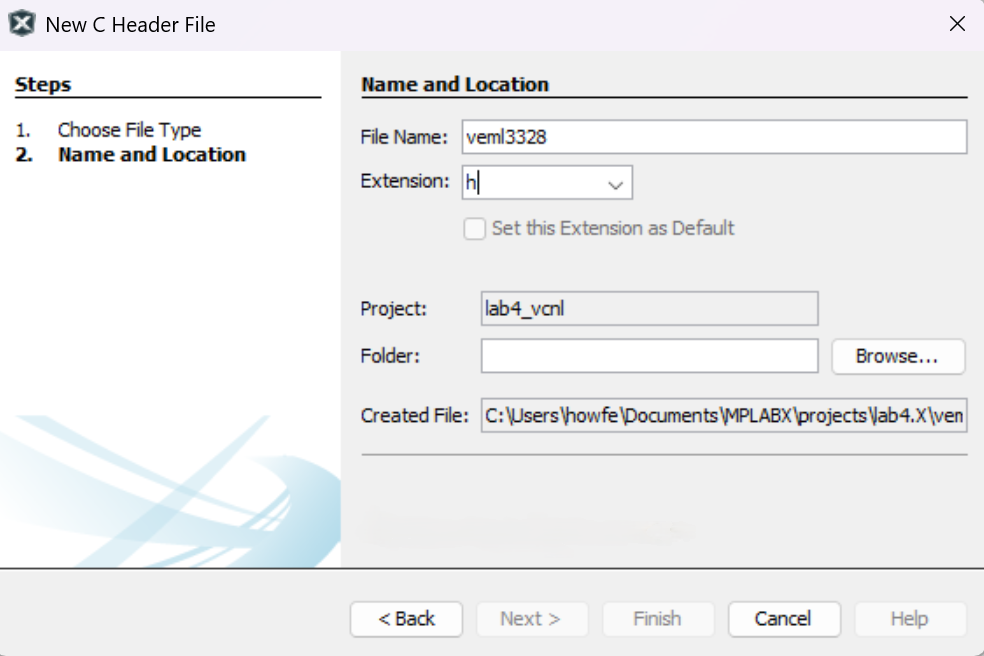
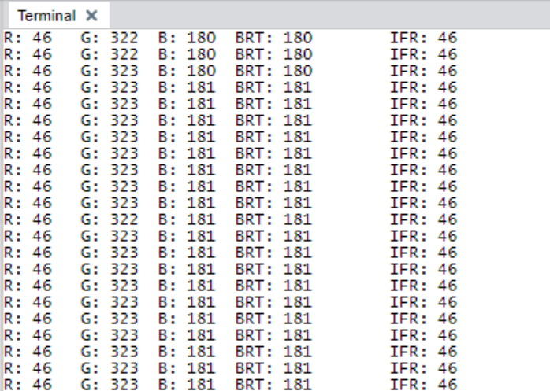

Sensor Integration Lab
Project Setup
This section will briefly describe how to set up the project resources for this lab.
- In the top left corner of MPLAB X IDE, click on File → New Project. Select Microchip Embedded and Application Project(s) then click on Next. Ensure that the device is set to AVR64DD32 and the tool is set to the Curiosity Nano then click Next. Select the latest XC8 compiler and click Next. Type "mplab_lab4" for the Project Name and click Finish.
- On the MPLAB X IDE toolbar, click on the MCC icon to open the Code Configurator. Using the Device Resources tab, add the following resources:
- UART – set to USART0 and change the Baudrate to 115200
- UART Example – select UART Write String and set it to Polled
- Timer – set the timer to TCB0
- I2C_Host – leave everything as default
- Click on the settings icon next to the Interrupt Manager, then enable Global Interrupt Enable.
- In the Pin Grid View, lock TWI0 SCL & SDA for Port A pins 2 & 3 and lock USART0 RXD & TXD for Port D pins 4 & 5. 
- In the Project Resources Tab, click on Generate to create the system resource files.
Programming the VEML3328 and VCNL4200
This section will walk through the programming section of the lab.
Writing the VEML3328 Driver
- In the Projects tab, right click on Header Files then click New → C Header File. 
- In the File Name field, type "veml3328". Leave all other fields as default. Then click Finish to create the header file. 
- In the veml3328.h file, add the following function declarations:
#ifndef VEML3328_H #define VEML3328_H #ifdef __cplusplus extern "C" { #endif void veml_init(); void veml_read_colors(uint16_t* color); void veml_read_brightness(uint16_t* brightness); #ifdef __cplusplus } #endif #endif /* VEML3328_H */ - Create the veml3328.c file and implement the functions:
#include "mcc_generated_files/system/system.h" #include#define VEML_I2C_ADDR 0x10 #define VEML_CLR_CMD_REG 0x04 #define VEML_RED_CMD_REG 0x05 #define VEML_GRN_CMD_REG 0x06 #define VEML_BLU_CMD_REG 0x07 #define VEML_IFR_CMD_REG 0X08 static uint8_t read_data[2] = { 0x00, 0x00 }; void veml_init() { static uint8_t write_data[3] = { 0x00, 0x00, 0x00 }; while(TWI0_IsBusy()); TWI0_Write(VEML_I2C_ADDR, write_data, 3); } void veml_read_colors(uint16_t* color) { static uint8_t write_cmd; write_cmd = VEML_RED_CMD_REG; while(TWI0_IsBusy()); TWI0_WriteRead(VEML_I2C_ADDR, &write_cmd, 1, read_data, 2); color[0] = (read_data[1] << 8) | read_data[0]; write_cmd = VEML_GRN_CMD_REG; while(TWI0_IsBusy()); TWI0_WriteRead(VEML_I2C_ADDR, &write_cmd, 1, read_data, 2); color[1] = (read_data[1] << 8) | read_data[0]; write_cmd = VEML_BLU_CMD_REG; while(TWI0_IsBusy()); TWI0_WriteRead(VEML_I2C_ADDR, &write_cmd, 1, read_data, 2); color[2] = (read_data[1] << 8) | read_data[0]; } void veml_read_brightness(uint16_t* brightness) { static uint8_t write_cmd; write_cmd = VEML_CLR_CMD_REG; while(TWI0_IsBusy()); TWI0_WriteRead(VEML_I2C_ADDR, &write_cmd, 1, read_data, 2); brightness[0] = (read_data[1] << 8) | read_data[0]; write_cmd = VEML_IFR_CMD_REG; while(TWI0_IsBusy()); TWI0_WriteRead(VEML_I2C_ADDR, &write_cmd, 1, read_data, 2); brightness[1] = (read_data[1] << 8) | read_data[0]; }
Writing the VCNL4200 Driver
- Create vcnl4200.h:
#ifndef VCNL4200_H #define VCNL4200_H #ifdef __cplusplus extern "C" { #endif void vcnl_init(); uint16_t vncl_read_ps(); #ifdef __cplusplus } #endif #endif /* VCNL4200_H */ - Implement vcnl4200.c:
#include "mcc_generated_files/system/system.h" #include#define VNCL_I2C_ADDR 0x51 #define VNCL_PS_CONF1_CONF2_REG 0x03 #define VNCL_DATA_PS_REG 0x08 static uint8_t read_data[2] = { 0x00, 0x00 }; void vcnl_init() { static uint8_t write_data[3] = { VNCL_PS_CONF1_CONF2_REG, 0x06, 0x00}; while(TWI0_IsBusy()); TWI0_Write(VNCL_I2C_ADDR, write_data, 3); } uint16_t vncl_read_ps() { static uint8_t write_cmd = VNCL_DATA_PS_REG; while(TWI0_IsBusy()); TWI0_WriteRead(VNCL_I2C_ADDR, &write_cmd, 1, read_data, 2); return (read_data[1] << 8) | read_data[0]; }
Writing the MCP23008 Driver
- Create mcp23008.h:
#ifndef MCP23008_H #define MCP23008_H #ifdef __cplusplus extern "C" { #endif #define MCP_LED_CHUNK_SIZE 512UL void mcp_leds_init(); void mcp_write_leds(uint8_t val); #ifdef __cplusplus } #endif #endif /* MCP23008_H */ - Implement mcp23008.c:
#include "mcc_generated_files/system/system.h" #include#define MCP_LEDS_ADDR 0x25 #define MCP_LEDS_IO_REG 0x09 void mcp_leds_init() { static uint8_t write_data[2] = { 0x00, 0x00 }; while(TWI0_IsBusy()); TWI0_Write(MCP_LEDS_ADDR, write_data, 2); } void mcp_write_leds(uint8_t val) { static uint8_t write_data[2] = { MCP_LEDS_IO_REG, 0x00 }; write_data[1] = ~val; while(TWI0_IsBusy()); TWI0_Write(MCP_LEDS_ADDR, write_data, 2); }
Writing the Timer Driver
- Create systimer.h:
#ifndef SYSTIMER_H #define SYSTIMER_H #ifdef __cplusplus extern "C" { #endif void timer_callback(); void clear_timer(); uint32_t read_timer(); #ifdef __cplusplus } #endif #endif /* SYSTIMER_H */ - Implement systimer.c:
#include "mcc_generated_files/system/system.h" #includestatic volatile uint32_t timer = 0UL; void timer_callback() { cli(); timer++; sei(); } void clear_timer() { cli(); timer = 0; sei(); } uint32_t read_timer() { uint32_t val; cli(); val = timer; sei(); return val; }
Writing Main.c
#include "mcc_generated_files/system/system.h"
#include
#include
#include "systimer.h"
#include "vcnl4200.h"
#include "mcp23008.h"
#include "veml3328.h"
#define PROXIMITY_THRESHOLD 100
void UART_WriteString(const char *message);
char uart_str[80];
int main(void)
{
SYSTEM_Initialize();
Timer0.TimeoutCallbackRegister(timer_callback);
vcnl_init();
mcp_leds_init();
veml_init();
UART_WriteString("MPLAB X Lab 4\n\r");
clear_timer();
while(read_timer() < 100);
uint16_t proximity = 0;
uint8_t led = 0, write_led = 0, i;
uint16_t color[3] = { 0x00, 0x00, 0x00 };
uint16_t light[2] = { 0x00, 0x00 };
while(1)
{
proximity = vncl_read_ps();
led = (uint8_t) (proximity / MCP_LED_CHUNK_SIZE);
write_led = proximity > PROXIMITY_THRESHOLD ? 0x80 : 0x00;
for (i = 0; i < led; i++)
{
write_led >>= 1;
write_led |= 0x80;
}
mcp_write_leds(write_led);
if (read_timer() > 100)
{
clear_timer();
veml_read_colors(color);
veml_read_brightness(light);
sprintf(uart_str, "R: %u\tG: %u\tB: %u\tBRT: %u\tIFR: %u\n\r", color[0], color[1], color[2], light[0], light[1]);
UART_WriteString(uart_str);
}
}
} Running the Lab
- Press the build button
 to compile and build the program.
to compile and build the program. - Navigate to the top toolbar and click Window → Debugging → Data Visualizer.
- For the Curiosity Nano port, change the baudrate to 115200 if it isn't set already, then click on the terminal icon to connect the port to the terminal.
- Click the debug button to start the project.
The terminal output should start printing out the sensor values. When you move your hand close to the proximity sensor, you should see the LEDs light up! 